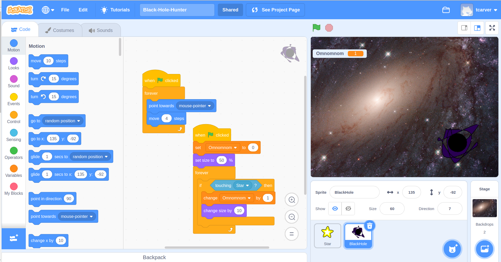

Black Hole Hunter¶
We will be following this tutorial: Hungry Shark
Don’t forget to make it space themed! For example your main character could be a black-hole searching for stars to eat and grow!
Find a simple example here
If you have never used scratch before go back to the Using Scratch section.
Otherwise start a new scratch project and type in your game name in the blue bar at the top of the screen.
Step 1 : Make Sprites¶
For this game tutorial the player controls a predator sprite who eats other sprites. You will need to make a predator sprite that the player controls and a prey sprite which is eaten.
Choose a Predator sprite.¶
Hover over the cat icon in the bottom right of the sprite section. to make a new sprite. YOu will then see options for adding a new sprite.
{kind=link}
The first sprite will be the player’s character. For example a Black Hole which is a massive object in space which can swallow stars and planets.
- You have four ways of adding new sprites:
Choosing an existing scratch sprite.
Paint your own sprite.
Upload a sprite image from your computer, you can also download images from our GameJam pictures folder to use here.
Duplicate a sprite you are already using. (right click on an open sprite and click duplicate)
Make a Prey sprite.¶
This is what the player’s sprite will eat to grow and get points. For example stars or planets.
Choose a backdrop.¶
- Hover over the backdrop button in the bottom right and add an image by one of the options:
choosing a scratch background
painting a background
uploading your own image or an image from the GameJam pictures folder.
This will be the game background, for example space.
Step 2 : Program Predator Sprite¶
You want to be able to control the predator sprite in the game so it can find the prey. We do this by making code for the sprite.
Drag your predator/player sprite where you want it to start on the game screen.
Click on the yellow event tab. Drag the block “When Green Flag clicked” onto your coding space. This will tell your sprite code to start when the game begins.
To get your sprite move towards the mouse go to blue motion tab: drag “Point towards (mouse-pointer)” onto your code. drag “move (10) steps” and add to your code. change the 10 to 4 steps.
This will only move sprite once. To make the sprite follow the mouse: drag: forever loop from the control section. Place this loop around both movement options in your code.
{kind=link}
Step 3 : Program Prey sprites¶
You need your prey sprites to appear on the screen but disappear when they are eaten by the predator. This means they need their own code.
Drag your prey sprite to where you want it to start on your game screen.
Drag: event block “When green flag clicked” into your code, to start sprite at the begining of the game.
To be eaten by predator drag the “if () then () ” loop from the control section. Place this loop under the event block.
We want our prey to be eaten if it touches the predator. To do this, go to the sensing section and select “touching () ” and drag this into the “if” loop after the “if”. Choose the name of your predator in the drop down box. Any action in the loop is now activated by the predator touching the prey.
Find the block “hide” from the look section. If you place this in the “Then” part inside of the “if” loop then the prey will disappear after touching the predator.
As it it, this code will only happen once. If you want the prey to be eaten at any time, drag the forever loop from control and place it around the if loop.
Final Result:¶
Your player can now follow the mouse to eat prey around the screen.
You can change the sprites, the backdrop and their code. They can move faster, the prey can run away, the predator can grow, you can make more obstacles, you can gain points by eating prey.
Feel free play around with your game. There are more coding skills you can try in the next game tutorial.
Below is an example of what your end project could look like.
{kind=link}